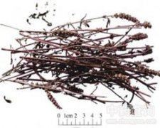

荆芥

拼音
Jīnɡ Jiè
别名
香荆荠、线荠、四棱杆蒿、假苏
来源
本品为唇形科植物荆芥Schizonepeta tenuifolia Briq. 的干燥地上部分。夏、秋二季花开到顶、穗绿时采割，除去杂质，晒干。
生境分布
全国大部分地区有分布。全国大部分地区有产，主产江苏、江西、湖北、河北等地。
药材特点
一年生草本，高60～90厘米。茎直立，四棱形，基部稍带紫色，上部多分枝，全株被短柔毛，叶对生，羽状深裂，茎基部的叶裂片5；中部及上部的叶裂片3～5，线形或披针形，长1.5～2厘米，宽2～4毫米，全缘，两面均被柔毛:下面具凹陷腺点，穗状轮伞花序，多密集于枝端，长3～8厘米；苞片叶状，线形，长乱0.4～1.7厘米，绿色，无柄；花萼钟形，长约3毫米，距纵脉5条，被毛，先端5齿裂；花冠淡紫色，2唇形，长约4毫米，上唇2裂，下唇较大，3裂；雄蕊4，2强；子房4裂，花柱基生，柱头2裂。小坚果4，卵形或椭圆形，长约1毫米，棕色。花期6～8月。果期7～9月。
性状
本品茎呈方柱形，上部有分枝，长50～80cm，直径0.2～0.4cm；表面淡黄绿色或淡紫红色，被短柔毛；体轻，质脆，断面类白色。叶对生，多已脱落，叶片3～5羽状分裂，裂片细长。穗状轮伞花序顶生，长2～9cm，直径约0.7cm。花冠多脱落，宿萼钟状，先端5齿裂，淡棕色或黄绿色，被短柔毛；小坚果棕黑色。气芳香，味微涩而辛凉。
性味
辛，微温。
功能主治
解表散风，透疹。用于感冒，头痛，麻疹，风疹，疮疡初起。炒炭治便血，崩漏，产后血晕。
用法用量
4.5～9g。
化学成分
含挥发油1.8％，油中主成分为右旋薄荷酮、消旋簿荷酮、少量右旋柠檬烯。
药理作用
1：用人工发热的家兔：口服荆芥煎剂与浸剂2克（生药）／公斤，无甚解热作用
2：在体外：高浓度（1:100）有抗结核杆菌之作用
摘录
《中国药典》